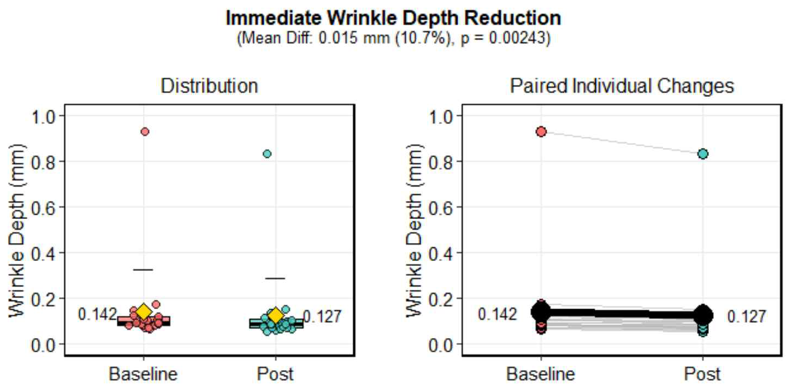
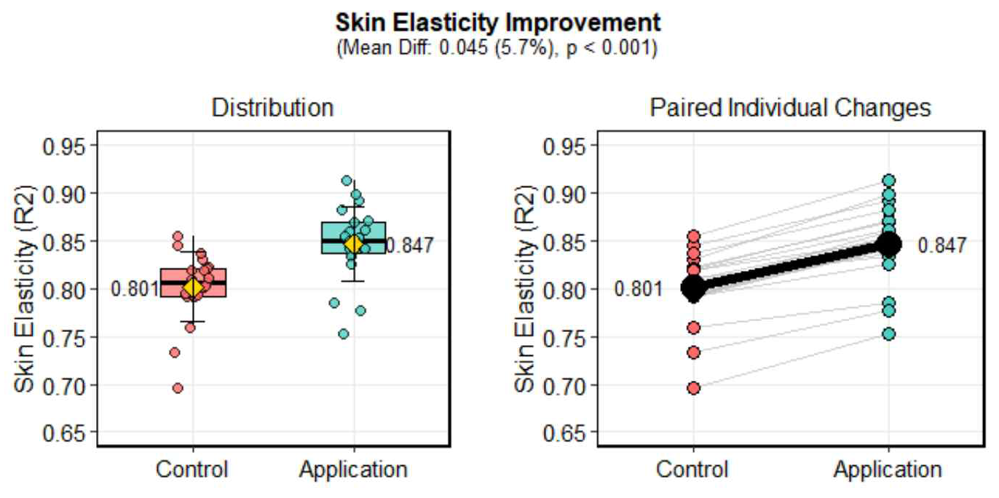
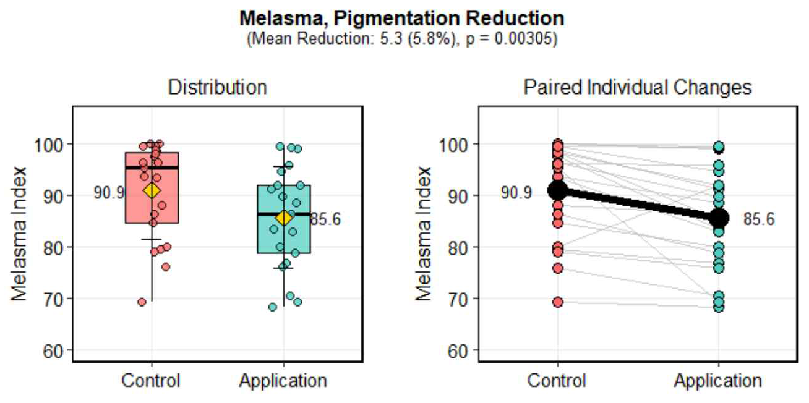

인체적용 시험 상세 Potatosome® 함유 제형 · 유효 데이터 n=21
Potatosome® 함유 화장품 제형의 인체적용 시험 결과를 지표별로 정리했습니다. 유효 대상 21명의 데이터를 Baseline·Post 및 Control·Application 비교로 분석했으며, 평균값과 개선율, 통계 검정 결과를 함께 밝힙니다. 본 페이지의 수치는 회사 보유 데이터로, 기능성화장품 인정·광고 심의를 거치기 전의 연구 결과입니다.
하나의 제형, 네 가지 지표
동일한 화장품 제형을 표면온도·주름 깊이·탄력·색소 네 가지 지표로 측정했습니다. 각 지표는 적용된 검정 방법과 함께, 지표별 언어로만 서술합니다.
- 원료
- Potatosome®(감자 유래 식물 엑소좀)을 함유한 화장품 제형
- 대상
- 성인 피험자 유효 데이터 n=21
- 비교
- Baseline vs Post (쿨링·주름 깊이) · Control vs Application (탄력·색소)
- 통계
- 대응표본 t-검정, 대조·적용 부위 비교에는 독립표본 t-검정. 평균 차이·개선율과 p-value를 함께 표기합니다.
- 자료
- 회사 보유 데이터. 시험기관·보고서 번호·측정 기기 상세는 요청 시 별도 제공합니다.
즉각 피부 쿨링
제형을 도포한 직후 피부 표면온도가 얼마나 내려가는지 본 항목입니다. 도포 전(Baseline)과 도포 직후(Post)의 표면온도를 같은 피험자에서 측정해 비교했습니다.
도포 전·직후 피부 표면온도 — 피험자 21명의 개별 변화
가는 선 하나가 피험자 한 명의 변화입니다. Baseline에서 Post까지 그어지고, 굵은 선은 21명의 평균입니다.
- 도포 직후 한 시점의 측정값으로, 냉각 효과의 지속 시간을 보여주지는 않습니다.
- 측정 환경(실온·습도)과 피부 부위에 따라 절대값이 달라질 수 있습니다.
- 평균 4.2 °C 감소는 개인차를 포함한 값이며, 모든 피험자에서 같은 폭으로 나타나지는 않았습니다.
주름 개선 — 주름 깊이 감소
안면 주름의 깊이를 도포 전후로 측정해 비교했습니다. 깊이 값이 작을수록 주름이 얕다는 뜻입니다.

- 1명의 도포 전 값이 0.932 mm로 다른 피험자보다 크게 높아 평균이 그 값에 민감합니다. 다만 21명 모두에서 감소했고, 중앙값도 0.0959 mm에서 0.0901 mm로 내려갔습니다.
- 측정 부위와 표정 습관에 따라 값이 달라집니다.
- 단회 도포 직후 결과로, 수 주 사용에 따른 개선을 의미하지 않습니다.
피부 탄력 개선 (R2)
피부 탄력 지표(R2)를 대조(Control) 부위와 적용(Application) 부위에서 비교했습니다. R2는 피부 변형에 대한 회복 특성을 수치화한 기기 지표로, 1에 가까울수록 탄력적입니다.

- 대조·적용 부위를 대응 분석이 아닌 독립표본 t-검정으로 비교해, 같은 피험자 안의 변동이 일부 남습니다.
- R2는 기기 측정 지표로, 주관적인 탄력 체감과 일치하지 않을 수 있습니다.
- 측정 부위와 피부 상태에 따라 절대값 차이가 있습니다.
기미·색소침착 완화
색소 지수(Melasma index)를 대조 부위와 적용 부위에서 비교했습니다. 지수가 낮을수록 색소침착이 옅게 측정되었다는 뜻입니다.

- 색소 지수는 측정 기기·조명·피부 톤에 민감해 절대값 비교에는 제한이 있습니다.
- 자외선 노출과 차단제 사용 여부가 결과에 영향을 줄 수 있습니다.
- ‘기미 치료’가 아닌 화장품 제형의 색소침착 완화 결과이며, 기능성 표시는 심의 후 확정됩니다. 21명 중 20명에서 감소했습니다.
이 수치가 무엇이고, 무엇이 아닌지
이 페이지는 화장품 제형의 인체적용 결과입니다. 의약품의 효능·효과가 아니며, 기능성화장품 인정 절차를 대신하지 않습니다.
- 인체적용 결과화장품 제형 사용 후 피부에서 측정된 변화이며, 치료·예방 효능을 주장하지 않습니다.
- n=21 · 회사 데이터유효 대상 21명의 데이터입니다. 시험기관·보고서 번호·측정 기기 상세는 시험 보고서와 함께 별도 제공합니다.
- 연구 간 직접 비교 제한시험계와 제형이 다른 연구와의 직접 비교는 제한됩니다.
- 표현은 심의 후 확정기능성화장품 인정·표시광고 심의 결과에 따라 제품·커뮤니케이션의 표현이 달라질 수 있습니다.
그 인체 결과를 받쳐 주는 세포 근거
이 제형을 받쳐 주는 기전 연구는 별도 페이지에 모았습니다. peer-reviewed 논문 3편의 in vitro · ex vivo 시험 35종을 항염증 · 항산화 · 광노화 · 장벽 · 재생 · 침투 안전성 6개 카테고리로 묶고, 시험별 모델·농도·보고된 수치를 함께 적었습니다.
* 세포 연구는 인체적용 결과와 구분해 표기하며, 세포 실험 결과를 인체 효능으로 직접 해석하지 않습니다.